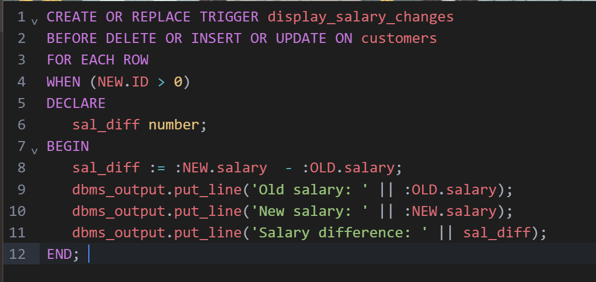

Trigger is invoked by Oracle engine automatically whenever a specified event occurs.Trigger is stored into database and invoked repeatedly, when specific condition match. Triggers are stored programs, which are automatically executed or fired when some event occurs. Triggers are written to be executed in response to any of the following events.
A database manipulation (DML) statement (DELETE, INSERT, or UPDATE).
A database definition (DDL) statement (CREATE, ALTER, or DROP).
A database operation (SERVERERROR, LOGON, LOGOFF, STARTUP, or SHUTDOWN).
Triggers could be defined on the table, view, schema, or database with which the event is associated.
Creating a trigger:
Syntax for creating trigger:
CREATE [OR REPLACE ] TRIGGER trigger_name
{BEFORE | AFTER | INSTEAD OF }
{INSERT [OR] | UPDATE [OR] | DELETE}
[OF col_name]
ON table_name
[REFERENCING OLD AS o NEW AS n]
[FOR EACH ROW]
WHEN (condition)
DECLARE
Declaration-statements
BEGIN
Executable-statements
EXCEPTION
Exception-handling-statements
END;
